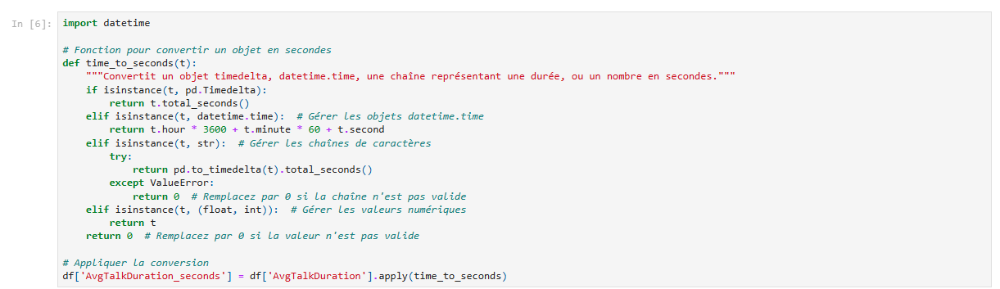

2. Préparation des Données
Description des Variables
Call_Id :
- Type : Identifiant (ID)
- Description : Un identifiant unique attribué à chaque appel, utilisé pour référencer spécifiquement chaque interaction dans le dataset.
Agent :
- Type : Catégorique (Nom)
- Description : Le nom de l'agent du centre d'appels qui a pris en charge l'appel. Cette variable permet d'analyser les performances par agent.
Date :
- Type : Date
- Description : La date à laquelle l'appel a eu lieu. Cela peut être utilisé pour analyser les tendances au fil du temps.
Time :
- Type : Heure
- Description : L'heure à laquelle l'appel a été reçu. Elle peut être utilisée pour identifier les périodes de pointe en termes d'appels.
Topic :
- Type : Catégorique
- Description : Le sujet de l'appel, qui peut être l'un des suivants :
- Contract related : Questions liées aux contrats.
- Technical Support : Assistance technique.
- Payment related : Questions concernant les paiements.
- Admin Support : Assistance administrative.
- Streaming : Questions concernant le streaming.
Answered :
- Type : Catégorique (binaire)
- Description : Indique si l'appel a été répondu ou non. Possède deux valeurs possibles :
- Y : L'appel a été répondu.
- N : L'appel n'a pas été répondu.
Resolved :
- Type : Catégorique (binaire)
- Description : Indique si le problème du client a été résolu durant l'appel. Possède également deux valeurs possibles :
- Y : Le problème a été résolu.
- N : Le problème n'a pas été résolu.
SaS (Speed of Answer) :
- Type : Numérique (secondes)
- Description : Le temps d'attente avant que l'appel soit répondu, mesuré en secondes. Cette variable est essentielle pour évaluer l'efficacité du service client.
AvgTalkDuration :
- Type : Durée (format hh:mm:ss)
- Description : La durée moyenne de l'appel, mesurée au format heures : minutes : secondes. Cette variable aide à comprendre le temps consacré par les agents pour traiter les appels.
Satisfaction_rating :
- Type : Numérique
- Description : Une note de satisfaction donnée par le client après l'appel, souvent sur une échelle (par exemple, de 1 à 5). Cette variable est cruciale pour mesurer la satisfaction des clients vis-à-vis du service reçu.
Identification des valeurs manquantes et les incohérences :
Résumé des Valeurs Manquantes :
- SaS (Speed of Answer) : 946 valeurs manquantes
- AvgTalkDuration : 946 valeurs manquantes
- Satisfaction_rating : 946 valeurs manquantes
Actions à Envisager :
- Analyse de l'Impact des Valeurs Manquantes :
Comprendre l'impact potentiel des valeurs manquantes sur notre analyse. Par exemple, si ces colonnes sont essentielles pour évaluer la performance des agents ou la satisfaction des clients, nous devrons y prêter une attention particulière. - Options de Traitement des Valeurs Manquantes :
- Suppression : Si les valeurs manquantes représentent un faible pourcentage de l'ensemble des données et n'affectent pas l'analyse, nous pouvons envisager de supprimer ces lignes.
- Mise à coté ou dans une autre variables : On les rassembles dans une ou plusieurs variables
Plan d'Action pour le Traitement des Valeurs Manquantes :
Analyse Préliminaire des Valeurs Manquantes
Pourcentage des Valeurs Manquantes : Calcule du pourcentage de valeurs manquantes pour chaque variable afin de comprendre l'ampleur du problème.
Étant donné que ces trois variables sont essentielles pour notre analyse, 18,92 % de données manquantes est une proportion significative. La suppression
de ces lignes pourrait entraîner la perte d'une quantité considérable d'informations.
Résolution :
- Normalisation de variable :
Commençons par la variable "AvgTalkDuration" on va créer une variable "AvgTalkDuration_Second" pour mieux gerer
 - Lecture approfondie du jeu de données :
Lecture du jeu de données pour comprendre la répartition des valeurs manquantes, sur SaS, AvgTalkDuration, Satisfaction_rating, AvgTalkDuration_seconds. Il se peut que ces variables ont les même lignes vides

Observation: Comme on l'avait pensé, ces trois variables ont les même lignes vides. et on voit que Answered et Resolved aussi son en N. Ces données sont donc mal traité. - Solution :
Il existe de nombreuses solutions pour ce cas. Toutefois, afin d'exploiter pleinement notre jeu de données, il serait judicieux de créer un colonne Abandoned_Call avec valeurs: Y/N. Inutile de le mettre en 0/1